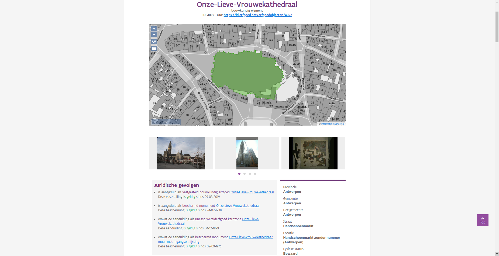

Op 13 mei lanceerden we een gloednieuwe Inventaris Onroerend Erfgoed. Wie de nieuwe inventaris al gebruikt heeft, heeft vast wel gemerkt dat er sprake is van vijf verschillende datasets: erfgoedobjecten, aanduidingsobjecten, personen, thema’s en gebeurtenissen. Hierbij vormen erfgoed- en aanduidingsobjecten de kern van de inventarisdatabank. In dit blog-artikel gaan we dieper in op deze twee datasets. De andere drie datasets, personen, thema’s en gebeurtenissen, spelen een ondersteunende rol. Deze komen later aan bod (Thema’s, personen en gebeurtenissen).
De erfgoedobjecten zijn het kloppend hart van de inventaris. Het zijn de dingen die wij en jullie als ons erfgoed zien. Van iconische gebouwen, zoals de Onze-Lieve-Vrouwekathedraal of het Gravensteen, over een landschap, zoals het Zwin, tot een eenvoudige kapel of boom, een schip of een orgel. De focus ligt bij een erfgoedobject niet op de juridische gevolgen, maar op de wetenschappelijke informatie over het object. Wat is het? Hoe groot is het? Waar ligt het? Hoe oud is het? Hoe ziet het er uit? Wie was betrokken bij het tot stand komen? Waar kan ik er meer over te weten komen? Het gaat om het erfgoed an sich, het ding zoals we het kennen en zien. In de praktijk is de afbakening van zo’n erfgoedobject vaak inherent een beetje vaag. Als je peilt naar het Gravensteen zal de ene persoon misschien enkel de burcht zelf zien, een andere zal de gracht bij de burcht rekenen en nog een derde zal misschien het Sint-Veerleplein voor het kasteel ook als deel van het Gravensteen zien. En zeker bij heel oude gebouwen en sites, die in de loop der tijd aan veel veranderingen onderhevig waren, valt er wel iets te zeggen voor de verschillende afbakeningen. In de praktijk kiezen we voor de erfgoedobjecten steeds één afbakening, maar we zien die niet als een heel exacte afbakening.
In tegenstelling tot de erfgoedobjecten, zijn de aanduidingsobjecten het erfgoed zoals het juridisch verankerd werd: de bescherming of de vaststelling van een erfgoedobject. Waar de grens van een erfgoedobject misschien een beetje vaag kan zijn, moet deze van een aanduidingsobject onbetwistbaar zijn. De afbakening bepaalt hier namelijk welke rechtsgevolgen er op een bepaald stuk Vlaanderen van toepassing zijn. De laatste decennia werd deze afbakening vooral scherp gesteld voor beschermingen. Sinds het nieuwe Onroerenderfgoeddecreet zetten we ook heel sterk in op het exact verankeren van vastgesteld erfgoed, door deze af te bakenen met een polygoon in plaats van de vroegere punten. De belangrijkste vragen bij een aanduidingsobject zijn: exact hoe groot is het, om welk type aanduiding gaat het, waarom heeft dit erfgoedwaarde en welk besluit of ander document staaft die beslissing? Hierbij is het niet geheel ondenkbaar dat een bepaald erfgoedobject meerdere keren verankerd werd onder verschillende statuten, of dat een erfgoedobject in meerdere stappen verankerd werd in verschillende kleine beschermingen of vaststellingen.
De Onze-Lieve-Vrouwekathedraal, een erfgoedobject en zijn aanduidingen.
Als we bijvoorbeeld de Onze-Lieve-Vrouwekathedraal bekijken, dan zien we dat dit erfgoedobject 4 aanduidingen bevat. Een vaststelling als bouwkundig erfgoed, een aanduiding als Unesco werelderfgoed, een bescherming als monument en nog een bijkomende bescherming als monument van een stukje muur. Waar het erfgoedobject de kathedraal voorstelt, vertellen de aanduidingsobjecten ons in detail wat er kan met verschillende stukjes van de kathedraal.
Het onderscheid tussen erfgoedobjecten en aanduidingsobjecten lijkt op het eerste gezicht misschien wat complex en arbitrair. Dit onderscheid werd in het leven geroepen toen we aan het project van de beschermingsdatabank werkten. Dit was vlak na de samensmelting van het agentschap Ruimte en Erfgoed en het Vlaams Instituut voor het Onroerend Erfgoed. De eerste beheerde de beschermingsdatabank, de tweede de inventarisdatabank. Die laatste databank bestond op dat moment uit een aantal inventarissen, zoals de inventaris bouwkundig erfgoed en de inventarissen van tuinen en parken en houtige beplantingen met erfgoedwaarde. Voor elk element werd een aparte pagina of fiche voorzien waarop de belangrijkste gegevens van het object konden afgelezen worden. Op dat moment werd enkel het bouwkundig erfgoed vastgesteld. Alhoewel daar achterliggend een complexere datastructuur achter zat, werd dit op een inventarisfiche gevisualiseerd door een simpele ja/nee bij het veld vastgesteld.
De beschermingsdatabank bood op dat moment veel minder mogelijkheden dan de inventarisdatabank, dus besloten we om al het beschermde erfgoed toe te voegen aan de inventarisdatabank en meteen te voorzien van afbeeldingen, thesaurustermen en uitgebreide beschrijvingen. Uiteindelijk wouden we voor het beschermde erfgoed over evenveel informatie kunnen beschikken als we tot dan hadden voor het geïnventariseerde.
In dit eerste datamodel werd beschermd erfgoed identiek beschreven als geïnventariseerd erfgoed. Zo was er een fiche voor een kerk in de inventaris bouwkundig erfgoed, een fiche voor diezelfde kerk als beschermd monument en mogelijk nog een fiche voor diezelfde kerk als onderdeel van het dorpsgezicht waarin ze stond. Die fiches herhaalden op die manier heel veel informatie, want elk had ongeveer dezelfde inhoudelijke en historische beschrijving. Soms met lichte verschillen omdat de afbakening van de fiche afweek. Zeker in het geval van objecten die meerdere beschermingen kenden, zoals een kerk waarvan de kerktoren eerst beschermd werd en daarna het schip, leidde dit tot heel veel dubbele informatie. Algauw bleek dat dit een nachtmerrie zou worden om te onderhouden. Indien er nieuwe informatie aan het licht kwam omdat er bijvoorbeeld nieuwe inzichten waren over de ontstaansgeschiedenis van een gebouw, moest dit aangepast worden in al die verschillende fiches.
Een gelijkaardig probleem stelde zich ondertussen tussen de verschillende inventarissen. Toen de inventarissen nog op papier gepubliceerd werden, was er weinig interactie. De inventaris tuinen en parken publiceerde in de reeks M&L Cahiers Historische tuinen en parken van Vlaanderen een historische tuin waarvan het bijhorende bouwkundig erfgoed in de reeks Bouwen door de Eeuwen Heen gepubliceerd werd. Vaak werd een deel van informatie uit de ene reeks hernomen in de andere. In boekvorm was dit logisch en best wel praktisch. Online bleek dit minder evident. Dan waren er twee fiches, beiden over een kasteel met tuin, maar telkens met een andere focus, het kasteel of de tuin. In het beste geval waren de fiches gewoon complementair, maar wanneer er redelijk wat tijd zat tussen de twee inventarissen, spraken ze elkaar soms gewoon tegen. Ook hier stelde zich de vraag wat er moest gebeuren met informatie die verouderd was en moest aangepast worden. (On data-driven systems and system-driven data)
Uiteindelijk gooiden we het roer om. We kwamen tot de conclusie dat het essentieel was om twee zaken te scheiden. Enerzijds, de inhoudelijke informatie. We willen die op zo weinig mogelijk plaatsen tegelijk bijhouden. Daarom kennen we nu aan elk erfgoedobject één of meerdere disciplines toe: archeologisch, bouwkundig, landschappelijk of varend. Waar we in het verleden voor een kasteel met tuin vaak meerdere fiches zouden aangemaakt hebben, streven we er nu zo veel mogelijk naar om alle informatie in één fiche samen te brengen. De afbakening van zo’n inhoudelijk object wordt vrij gekozen op basis van inhoudelijke afwegingen. Het is niet omdat van een bepaalde kerk enkel de kerktoren beschermd is, dat er geen relevante inhoudelijk informatie over de volledige kerk is. Anderzijds willen we de juridische informatie over zo’n object los kunnen behandelen van de inhoudelijke. We willen kunnen aangeven dat een bepaalde bescherming misschien niet meer bestaat (bv. in het geval van opheffing of vernietiging van het besluit), maar dat het erfgoed daarom nog niet verdwenen is. Of dat een bepaalde bescherming slechts een deel van een erfgoedobject betreft. De afbakening van een erfgoedobject wordt immers vrij gekozen op basis van inhoudelijke afwegingen, in tegenstelling tot een aanduidingsobject dat ook rekening houdt met juridische en andere technische afwegingen. Het is niet omdat van een bepaalde kerk enkel de kerktoren beschermd is, dat we geen informatie hebben over de rest van de kerk. Zo herwerkten we de beschermingsdatabank tot een databank van aanduidingsobjecten. De term aanduiding haalden we bij Historic England, waar men van designation of aanduiding spreekt als het formeel toekennen van rechtsgevolgen aan erfgoed (MIDAS Heritage, pp. 65).
Ons erfgoed is groot en verscheiden. Elke fiche die we opnemen in onze informatiesystemen, neemt een klein stukje van de werkelijkheid en zet dat in de schijnwerper. Maar elk van die stukjes is verbonden met andere stukjes. Daarom leggen we al een tiental jaar relaties tussen objecten die met elkaar verbonden zijn. Een relatie drukt een verband uit tussen twee objecten en werkt steeds in twee richtingen, als een woning deel uitmaakt van een sociale woonwijk, dan omvat die sociale woonwijk ook die woning.
Waar erfgoed lange tijd beheerd werd als eerder puntsgewijze objecten, is er al jaren een beweging aan de gang waarin grotere gehelen en contexten even belangrijk zijn als de kleine elementen die we als evident erfgoed erkennen. In vorige versies van de inventaris kon je deze gehelen vinden als bouwkundige gehelen, archeologische zones en ankerplaatsen. Vandaag de dag zijn al deze oude deelinventarissen erfgoedobjecten geworden. Maar we maken wel consequent het onderscheid tussen gehelen (grote oppervlaktes), en elementen (relatief kleinschalige stukjes erfgoed). Al sinds 2009 koppelen we verschillende erfgoedobjecten aan elkaar met een aantal relaties:
is gerelateerd aan: Een erfgoedobject is gerelateerd aan een ander erfgoedobject. Er is een verband tussen de beide objecten, zonder dat de ene de ander omvat. Dit kan een relatie zijn tussen een kolenmijn en een mijnwerkerscité, of een abdij en een nabijgelegen hoeve die ooit eigendom was van de abdij.
omvat: Een erfgoedobject omvat een ander erfgoedobject. Dit kan zijn omdat een geheel een element omvat, bijvoorbeeld een kasteeldomein dat het koetshuis of de kasteeltuin omvat. Of een element dat een ander element omvat, bijvoorbeeld een kerk die een apart beschreven orgel heeft.
is deel van: Een erfgoedobject is deel van een ander erfgoedobject. Dit is het omgekeerde van omvat, het is dan ook logisch dat het bovengenoemde orgel deel is van de kerk en dat het koetshuis deel is van het kasteeldomein.
Zoals reeds vermeld hadden we in onze oude inventarissen soms meerdere fiches die over ongeveer hetzelfde object gingen. Zoals een pastorie die apart beschreven werd van de bijhorende tuin. In de nieuwe inventaris is het mogelijk één fiche voor het geheel te voorzien, zodat die beschrijvingen samengevoegd kunnen worden tot een coherente omschrijving die de beide aspecten bevat. Aan de andere kant zal het flink wat tijd vragen voor alle oudere fiches herwerkt zijn, dus de beide verschijningsvormen zullen momenteel naast elkaar bestaan.
Omdat we zo duidelijk mogelijk wouden kunnen aangeven hoe erfgoedobjecten en aanduidingsobjecten zich met elkaar verhouden, namen we de interactie tussen erfgoedobjecten en aanduidingsobjecten onder de loep. We kwamen tot drie mogelijke relaties:
is aangeduid als: Een erfgoedobject is aangeduid als een aanduidingsobject. Dit houdt in dat het erfgoedobject en het aanduidingsobject (quasi) identiek zijn qua afbakening. Het erfgoedobject is dus (ongeveer) in zijn geheel beschermd of vastgesteld.
omvat de aanduiding als: Een deel van een erfgoedobject is aangeduid als een aanduidingsobject. Dit houdt dus in dat het erfgoedobject groter is dan het aanduidingsobject. Dit kan een kerk zijn waarvan de toren of het orgel apart beschermd werden of een historische tuin waarin een aantal beschermde bomen staan. Het erfgoedobject is dus gedeeltelijk beschermd of vastgesteld.
is deel van de aanduiding als: Een erfgoedobject is deel van een aanduidingsobject. Dit kan bv. een boom zijn in een beschermd landschap. De boom is individueel beschreven als erfgoedobject, maar kent geen eigen bescherming. Wel is ze een onderdeel van de bescherming van het landschap. Het erfgoedobject is dus kleiner dan het aanduidingsobject.
Je vraagt je misschien af wanneer je welke dataset moet gebruiken? Je kunt namelijk zoeken naar erfgoedobjecten of zoeken naar aanduidingsobjecten. Beide zoekformulieren bieden een aantal zoekopties of filters die te maken hebben met rechtsgevolgen, dus wanneer gebruik je nu wat? Essentieel dien je voor ogen te houden wat je eigenlijk aan het zoeken bent. Bij de erfgoedobjecten zoek je naar stukjes erfgoed en zoek je primair op inhoudelijk kenmerken. De eenheid van informatie is erfgoed. Bij de aanduidingsobjecten zoek je naar beschermingen of vaststellingen en zoek je primair op de kenmerken die iets over de aanduiding zeggen. De eenheid van informatie is hier niet erfgoed, maar juridische beslissingen over erfgoed.
Stel dat we op zoek gaan naar beschermde bibliotheken? Als we in het zoekformulier voor erfgoedobjecten zoeken naar typologie=bibliotheken en rechtsgevolgen=beschermd, dan krijgen we 17 erfgoedobjecten. In het formulier van de aanduidingsobjecten kunnen we dezelfde vraag stellen door te zoeken op typologie=bibliotheken, categorie=beschermd (en dus de andere categorieën uit te zetten) en geldig=ja (want we willen de huidige toestand zien). Dit levert 22 aanduidingsobjecten op. Niet geheel hetzelfde dus. In het eerste geval hebben we 17 erfgoedobjecten die geheel of gedeeltelijke een bibliotheek zijn (of geweest zijn), waarop een bescherming rust. In het tweede geval hebben we 22 beschermde objecten die iets met een bibliotheek te maken. Zo heb je bijvoorbeeld het Kasteeldomein van Loppem, dat 2 keer beschermd is: het volledige domein als landschap, en het landhuis en de bijgebouwen als monument. Naargelang wat je zoekt, zal de ene zoekopdracht beter aansluiten bij je wensen dan de andere.
Ik denk dat het voor iedereen die onze databanken regelmatig raadpleegt geen geheim is dat we over rijke, maar soms ook wel heel complexe informatie beschikken. Door deze op te delen in erfgoedobjecten en aanduidingsobjecten kunnen we maximaal flexibel omgaan met de inhoudelijke informatie en aanvullingen daarop doen zonder te raken aan de wettelijke verankerde informatie in het aanduidingsobject. De opdeling stelt ons in staat een deel van de complexiteit, ontstaan als gevolg van decennia aan erfgoedbeleid, te vatten in een zo begrijpelijk mogelijke vorm die toch zo feitelijk correct mogelijk blijft. Natuurlijk blijven we steeds alert voor mogelijkheden om onze informatie begrijpelijker en bevattelijker te maken. Heb je zelf nog suggesties, neem dan contact op met ons.